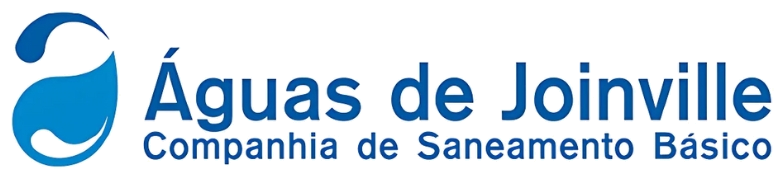

Notícias de projetos
Nenhum projeto encontrado com esses filtros. Tente limpar alguma camada acima.

Portal de acompanhamento — setor de saneamento
Atualização automática semanal
Reunimos, toda semana, o que as maiores companhias e agências de saneamento do Brasil e do mundo estão testando ou já colocaram para funcionar — estações, tecnologia, redes e obras.
Nenhum projeto encontrado com esses filtros. Tente limpar alguma camada acima.